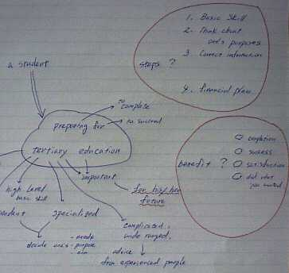

留学日誌
IELTSの受験対策(3) ライティング・スピーキング・試験の本番に向けて
●ライティング
●読みやすく、きれいな文字を速く書けるようにする
IELTSのライティングテストでは、個々のモジュールの目的に応じて
ジェネラル
Task1：フォーマルな手紙文、150語、解答時間20分
Task2：エッセイ（小論文）、250語、解答時間40分
アカデミック
Task1：表、グラフ、チャート、説明図などについてのレポート、
150語、解答時間20分
Task2：エッセイ（小論文）、250語、解答時間40分
とが出題されます。
マークシート形式のテスト（該当個所を塗りつぶす）や、リスニング・リーディングのように、解答を二、三語記入すればよいテストとは異なり、400語程度の長さの文章を自分の手で書く必要があります。
私の場合、英語で文章を書くことからはかれこれ15年以上もごぶさたしていましたので、語学学校に通い始めたとき、きれいな筆記体が書けなくなっていました。中学校時代（大昔！）にはそれなりに読みやすい筆記体を書くことには自信があったのですが......。しかたなく活字体で文章を書くのですが、これが著しく遅くて困りました。
ライティングテストも、他のテストと同様持ち時間が少ないので、読みやすい文字を速く書けることは大きなアドバンテージとなります。より速く書ける筆記体で（活字体でも速く書ければよい）きれいな文字を書けるようにすることが重要です。
●青色のペン、ボールペンで筆記する
読みやすい文字を速く書くには、どんな筆記具が適しているでしょうか？ オークランド大学でIELTS集中準備コースを教えているトリシュ先生によれば、 青色インクのボールペンあるいはペン が良いそうです。これは、
- ○鉛筆に比べ、ボールペンの方が明瞭な文字を速く書ける
- ○鉛筆、シャープペンシルのように芯が折れて手間取ることがない
- ○黒色インクよりも青色の方が目にやさしくて読みやすい
ことによります。
ボールペンで書いていて間違えた場合には、単に水平線、あるいは二重線で間違った言葉を消して、その後に続けて書いてゆけば問題ないそうです。
●文章の構成、組立て、論理の流れが大事
ライティングテストでは、Task1、Task2ともに、明快で論理的な文章構成と展開が要求されます。
例えば、How to prepare for IELTS という参考書には、アカデミックモジュールのTask2として、
Write an essay for an academic adviser on the following question:
What steps should a student take in preparing for tertiary education and what would be the benefit of taking such steps?
という問題が出されています。また、私が受験したときには、
「世界的なツーリズムの発展がもたらしているメリットとデメリットについて議論せよ」
というタスクが出題されました。こうした設問で高い得点を得るためには、
文章を書き始める前に、自分の頭の中に浮かんだアイデアや論点、経験などをかみ砕き、順序立てて整理しておく
必要があります。
ライティングテストの解答を書くときのステップと時間配分は、Task2 （解答時間40分）の場合
2分
設問を注意深く読み、要求事項をもれなく、正確に理解する
2分
テーマについての自分のアイデア、論点、経験をすばやく発想してメモする
3分
メモからエッセイに使う内容を取捨選択し、本論１、本論２....というような段落に、内容を対応させたノートを創る
3分
それぞれの段落を代表する「トピックセンテンス」を考える
25分
本文を書く
5分
スペルチェック、動詞・単複数形のチェック、など間違いの見直し
というようになるかと思います。
２と３の段階では、「マインドマップ」と呼ばれる発想法、記述法が多いに役立ちます。これは、Tony Buzan という人が考え出した方法で、最近日本でも用いられることが多くなり、関連する書籍もたくさん出ています。
具体的には、最初の設問であれば、preparing, tertiary education, steps, benefit といったキーワードから連想されるアイデアを線で結んで記述します。

| キーワード | 連想されるアイデア | エッセイで論じる steps |
| preparing tertiary education steps |
→十分な基礎学力が必要→ →積極性、自立性、独立性が重要→ →専門的である→何が学びたいか →分野が広範囲で複雑である→ →学費が高い→経済的プランが重要→ |
(1) 中等教育での実力をつける (2) 目標を明確にする (3) 綿密な情報収集を行う (4) 無理のない学費プランを立てる |
そして、このようなステップを採ったときには、以下のような利益が得られると述べました。
| benefit |
(1) 目標に向かって、効率よく無理なく学問に励むことができる (2) 自分の目標が達成でき、成功と満足が得られる |
最終的なエッセイは、次のような段落の構成として記述できると思います。
- イントロダクション
- 問題提起の文、書き手の考え・スタンス、エッセイの構成を述べる
- 本論１
- 学生の採るべきステップとして、自分の考えを述べる。
(1) 中等教育での実力をつける
(2) 目標を明確にする
(3) 綿密な情報収集を行う
(4) 無理のない学費プランを立てる- 本論２
- これらのステップを採ることによって得られる利益を述べる。
(1) 目標に向かって、効率よく無理なく学問に励むことができる
(2) 自分の目標が達成でき、成功と満足が得られる- 結論
- エッセイの短い要約、結論を述べる
●重要な言い回し、リンキングワードをマスターする
英語のエッセイ（小論文）は、日本人がイメージしているエッセイ＝散文・随筆と違って、論理的な文章の構成と流れが要求されます。段落と段落との結びつき、文と文との関係など、決まり文句的な言葉、linking words を使って読者にわかりやすく自分のアイデアを提示することが重要です。
リンキングワードの一例としては、
and
but
or else
nor
for
yet
so that
however
nevertheless
nonetheless
in contrast
on the other hand
thus
therfore
bisides
moreover
furthermore
also
indeed
in fact
firstly
secondly
in conclusion
to sum up
first of all
などがあります。日頃からこうした言葉を使った文章を書いて、用法に慣れておくことが大事です。
●模擬テストを数多くこなす
ライティング力を伸ばすためには、たくさんの文章をとにかく書きまくることに尽きると思います。毎日の日記を英語で書いてゆくのも良い方法ですが、与えられたテーマ（アカデミックの場合、固い＝学術的・専門的テーマが多い）に対する自分の考えを、論理立てた構成で明確に述べるという点からは、市販されている問題集の模擬テストを多くこなすことが大事だと思います。
IELTSライティングテストの出題内容は、経済、科学、文化、国際、教育、社会問題、など極めて広範囲にわたっており、こんなこと生まれてから一度も考えたことがなかった！ というような設問があります。
出題の傾向に親しむためにも、できるだけたくさんの模擬テストに挑戦してみることが良いでしょう。なお、模擬テストを行う場合には、時間を正確に計り、解答時間を厳密に守ることが大事です。あと５分あれば......ということがよくあるのですが、本番ではその５分を待ってくれませんので、自分に厳しく制限時間内で満足な解答が書けるように訓練しましょう。
●ネイティブスピーカーに添削してもらい、ミスを記録しておく
ライティング力を伸ばすためには、ネイティブスピーカーに添削してもらうことが不可欠だと思います。自然な文章、アカデミックな言い回し、フォーマルな手紙文におけるきちんとした言い方、などはなかなか一朝一夕には身に付かないので、添削を依頼することが可能であれば、ぜひ添削してもらいましょう。
さらに、添削して修正された個所は、専用のノートに書き込み、同じ間違いを繰り返さないようしっかり覚えておきましょう。スペリングや前置詞の使い方などは何度も繰り返して間違えますので、気をつけましょう。
●模範回答例を書き写す、あるいは音読する
ネイティブスピーカーに添削してもらうことが難しい場合には、レポートやエッセイの模範回答を筆写したり、音読することでも自然な書き言葉が身に付けられると思います。特に、グラフや表を記述するレポート（アカデミック、Task1）では、簡潔で正確な表現が学べます。
何回も筆写することはかなり大変な作業ですが、多大な効果があります。また、音読も頭に加えて耳と口でも覚えることができるので有効です。
●新聞、学術雑誌、専門書、模範解答などから使えるフレーズを集める
新聞の経済欄では、株価などの推移を表現している文章を容易に見つけることができます。また、学術雑誌や専門書、あるいはIELTSのリーディングテストでは、推論とか議論の展開に使う表現がよく出てきます。これらの文章を読んだら、使えそうなフレーズを探し出して、ノートに書き込んでおくと短期間でバラエティに富んだ表現力が身に付くでしょう。
●スピーキング
●各セクションの形式と内容に親しむ
スピーキングテストは、大きく４つのセクションに分かれています。それぞれのセクションの内容と心がけるポイントについてまとめてみます。
- セクション１
- 自分に関するいくつかの質問と応答、氏名、出身国、出身地、どのくらい長く英語を勉強しているか？、家族について、仕事について、趣味について etc
このセクションの内容はだいたい予想できるので、事前の準備を入念にしておくこと。質問に対する解答は、ぶっきらぼうにならないよう、話し好きのおばさんになったつもりで、できるだけ発展的に楽しく会話が進むように心がける。試験官に、「あ、もういいです。次の質問は.....」とか、「サンキュー、ストップ」とか話を中断されるくらいたくさんしゃべる気持ちで臨みましょう。
- 良くない例
- 試験官：出身はどこの国ですか？
受験者：日本です.........（沈黙） - 良い例
- 試験官：出身はどこの国ですか？
受験者：日本です。日本の名古屋という街から来ました。名古屋は日本の中では４番目に人口の多い都市です。特徴と言えば、まぁ道路が広いこと、車中心の街であることですね。かなり慌ただしい街ですよ。それからちょっと前には世界的に注目を集めていた干潟の埋め立てプロジェクトが結局中止になって、私としてはとてもほっとしました。あと、なぜか日本の中では、名古屋は「文化果つるところ」という定評があります。（笑） etc......
- セクション２
- 一般的なトピックに関してのスピーキング。自国の気候、地理、主な都市、社会問題、生活様式、文化、教育、社会の習慣、経済、自然、環境などについて述べ、自分の意見、考えを話す。また、これらのトピックについて、日本と受験地の国々とを比較して述べることも求められる。さらに、CV(Curriculum vitae) に書き込んだ、自分の趣味・特技などについてさらに詳しく訊ねられる。
このセクションでは、試験官は最初に質問をして、あとは聞き役に回りますので、自分でどんどんと話を進めていかなければなりません。重要なことは、流暢に話すことと、会話をとにかく続けてゆくことです。あまり馴染みのない話題、自分にとって話す題材の無い話題でも、なんとか数分間を話し続けましょう。チェックされているのは、あるトピックに関しての自分の知識ではなく、会話の力ですので気楽に臨みましょう。
また、トピックを事前に想定することは困難ですので、日頃からニュースなどに出てきたテーマについて、一般論と自分の考えを述べる練習をしておくと良いでしょう。
- セクション３
- ロール・プレイ。 試験官と受験者とが一定の役割を演じ、受験者は指示された内容について試験官に質問し、必要な情報を得ることが要求される。
ロール・プレイの例：
試験官 ＝ ある街のバスセンターの案内係
受験者 ＝ その街の大学に通い始めた留学生質問事項 １：自分の住んでいるところから大学までバスルートはあるか？
２：その区間の料金はいくらか？
３：定期券はあるか？また、学生割引は？
４：学生割引でチケットを買う場合には、どんな手続きが必要か？
５：始発と終発のバス時刻は？ここでは、受験者は、設定された役柄になりきって、実際にありうる会話を構成することが求められます。また、個々の質問を訊ねる際には、いろいろな形式の疑問文（直接、間接、付加、Wh疑問文など）を使うようにすると得点が高くなります。
さらに、セクション１と同様、自分の質問に対して返ってきた答えについて、なんらかの反応を示すようにしましょう。いきなり次の質問に進んでは不自然な会話になってしまいます。
反応例 質問：その区間の料金はいくらですか？
解答：片道２ドル20セントですね。反応：ははぁ、思っていたよりも安いんですね。ほっとしました。
質問：定期券はありますか？解答：市内中心部のＡゾーンは一ヶ月59ドルになります。
反応：うーん、けっこうしますね。でもまぁ週末にも使えるからお買い得ですね。
- セクション４
IELTS受験の目的、なぜＮＺ（他の国）で学ぶことにしたのか、あるいはなぜ志望の学科を学びたいのか、そして将来の計画・予定などについて話す。
最後のセクション４では、自分の短期的計画、そして長期的計画について、適切な表現を用いて述べることが必要です。また、比較的質問内容についての予測が立てやすいので、事前に準備をして、なめらかに話せるようにしておくとよいでしょう。
●事前のCV（自己紹介文）の書き方
スピーキングテストでは、事前にCV(Curriculum vitae) あるいは Personal Details と呼ばれる質問票が配れらます。ここで記入すべき内容の一例と、記入のコツをまとめてみます。
- Family Name:
- First Name:
- Nationality:
- First Language:
- Occupation:
- 職業について、会社員／学生だけでなく、業種・職種・専攻などなるべく詳しく書く。
- Work Experience:
- これもどんな経験をしたかをなるべく詳しく書く。
- How did you learn Einglish?:
- いつ頃から何年間ぐらいどのようにして英語を学んでいるかを詳しく書く。
- What are your personal interest?:
- セクション２に向けて、一番重要な項目。自分の趣味をなるべく詳しく、上位から３つぐらい、試験官がその内容について聞きたくなるように書くと良いでしょう。あるいは、自分がこれならたくさん話せる！ という内容を書くのが効果的です。
例えば、ただ「映画」と書くよりも、「空いている土曜の午前中に映画館でジャッキー・チェンのアクション映画を見ること」、とか、
「５歳になる息子と公園で鬼ごっこをすること」 など、具体的に書きましょう。- What are your future plans?:
- IELTSの試験に合格してからの予定、永住権の獲得後の予定、大学では何を専攻したいか、などなど。これらを詳しく書きます。短期・長期というように区分すると書きやすいと思います。
- Why are you taking this test?:
- 前の項目と関連があるのですが、はっきりと書いておきましょう。
●笑顔でリラックス、会話を楽しむ
スピーキングテストは、知識のテストではなく、自然な会話力のテストですので、ニコニコとリラックスして臨みましょう。いっしょに受験したクラスメートたちの話では、どの試験官もとても気さくな雰囲気で会話を進めてくれたようなので、安心して普段通りの心持ちで話しましょう。
また、事前に、いろいろな人との会話をたくさんして、場数を踏んでおくことが重要です。留学しているのであれば、街の本屋さんとか銀行、バスセンター、レストラン、観光案内所など、会話の訓練（特にセクション３）に役立つシチュエーションはいくらでもありますので、どんどん練習しましょう。
日本であれば、大都市や観光地などで英語を話す人々と出会う機会があると思いますので、積極的に話を切りだしてみましょう。また、友人同士でロールプレイをしてみるのも大変役に立ちます。
英語での会話を「楽しむ」ことがスピーキングテストの最大の秘訣だと思います。
●自然な会話文で話せるようにする
スピーキングテストでの会話は、書き言葉での英作文ではありませんので、自然な会話、カジュアルなあいづちなどができるよう練習しましょう。参考としては、 英会話、とっさのひとこと辞典 という本、あるいはＮＨＫの英会話ラジオ番組などが役立ちます。
●うまく言えなくても考え込まない
スピーキングの途中で、言いたい内容・単語がどうしても思い浮かばなくても、それを考え込んで沈黙してしまうよりは、なんとか言い換えて話を進めましょう。
例えば 「一戸建て住宅：a detached house」 という言葉が思い浮かばない時には、
私たち家族は３年前に、アパートから、えーと、なんて言ったかな？.....独立している家、庭があって車庫があって。わかります？ そうした家に引っ越しました。それである時....
というように、回り道をして言い換えてでもどんどん話しましょう。
●試験の本番に向けて
長い準備を終えて、いよいよ試験の本番を迎えるあなたに、もう少しだけ、気の付いたことをまとめておきます。若い方、現役の学生の方にはすべて常識！と言えることばかりかも知れませんが。
●試験会場への交通手段の確認、会場の下見を行う
国内、あるいは留学先、いずれの場合でも、試験会場への交通手段、所要時間、料金、会場の位置、などを事前に確認しておきましょう。一度試験会場へ行ったことがあれば、あまり緊張せずに済むと思います。
●パスポート、ペン、鉛筆（HB以上の濃さ）、消しゴム、鉛筆削り を忘れずに
パスポートは身分確認のため、また鉛筆などは調査票のマークシートを記入するのに必要となります。
●本番の２日前ぐらいからリラックスして、前日の夜には十分な睡眠をとる
IELTSの試験は、集合時間から最後のスピーキングテストを終わって解放されるまでかれこれ５～６時間かかります。リスニング約30分、リーディング・ライティング60分、スピーキング約15分という試験時間の間、集中して問題を解くにはかなりの集中力、知力とともに体力も要求されます。
試験当日にいかんなく実力を発揮するためには、リラックスした心持ちで、前日は十分な睡眠をとることが必要です。前日の夜遅くまで詰め込み勉強をすることは、かえって逆効果です。
●当日は軽食、飲み物を持参する
上に述べたような長時間試験会場にカンヅメになっていますと、いささかのどが渇き、少々おなかも空いてきます。休憩時間に軽食をとることは可能ですので、消化の良い、栄養価の高い軽食、飲料を持っていきましょう。
●努力は必ず報われる！ 自信をもって試験に臨む！
長い間の苦労と努力はきっと報われると思います。自信を持って試験に臨みましょう。やればやっただけのことはあると思います。IELTSの評価は相対的ではなく、絶対的に評価されますので、あなたの実力がそのままバンドスコアに反映されます。
皆さんの健闘を祈りつつ。長文におつきあいいただいてありがとうございました。
留学日誌 目次へ
サイトマップ
ホームへ
お問い合わせ